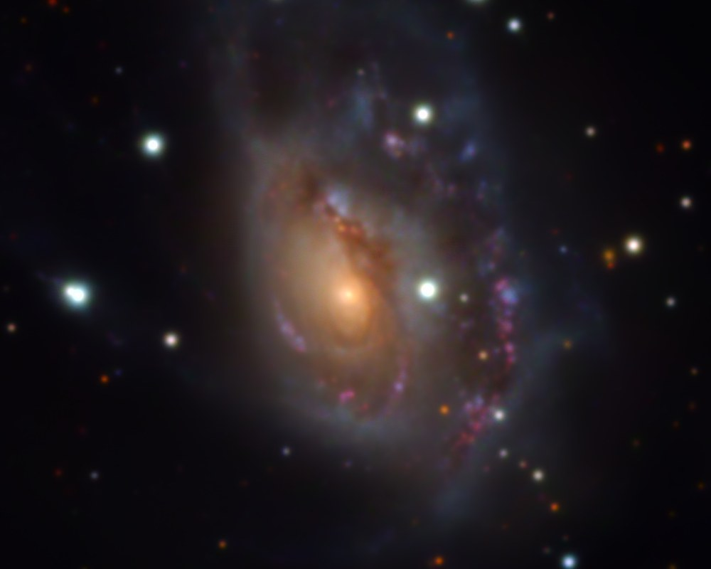
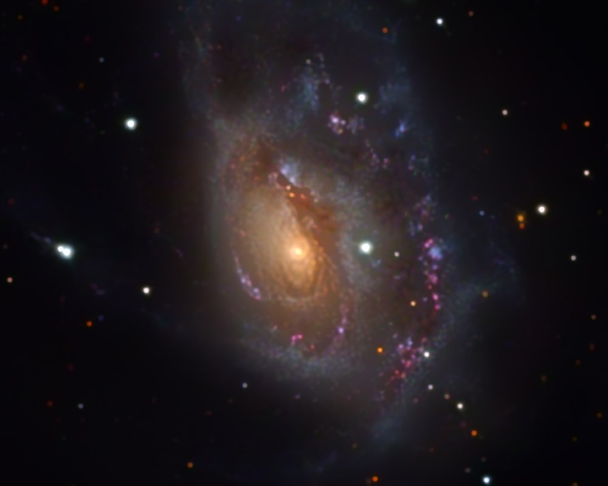

![A three by three grid of NGC 6946 crops at full resolution. Columns: the starless method, the learned network on every color plane, the learned network on the luminance only. Rows: the galaxy core, the brightest star in the field, and a patch of sky. The starless core has a faint ring on one star. The per-plane learned star has a cyan core with a dark ring inside it and the per-plane sky is dotted with red and cyan specks. The luminance-only column has a white star core, a clean sky, and the same sharp galaxy.](images/learned_deblur_methods.jpg)
Four days ago the previous note undid the blur in our images with Richardson-Lucy iteration and a stack of hand-written rules that kept it from drawing rings around stars. Every new field found a case the rules did not cover. This note replaces the rules with a small neural network, trained only on this telescope's own stacks, that sharpens galaxies about as far as Richardson-Lucy does and sharpens stars from 7.5 pixels to about 4 with no rings at all. Nobody has a sharp picture of this sky to train it on, so the training signal is manufactured: each stack is blurred a second time with its own measured kernel, and the network learns to take that blur back off. The design choice that made it work is that the network does not paint pixels. For every pixel it decides where the light came from and sends it back there, so light is only ever moved, never made, and a ring, which is light pushed below the sky, cannot happen. It is the default deconvolution in the morning pipeline as of today. The pictures are for looking at; nothing is measured from them.


A star is a point, and on our sensor it lands as a blob about 7.5 pixels wide at half maximum, with a faint wing out past 20 pixels and four diffraction spikes. Everything in the field is smeared by the same blob, the kernel (What shape is a star?), and the field's own stars tell us what it is. Deconvolution is taking the blob back out. It is hard because the blur destroys information: fine detail is attenuated to nothing, and any method that restores it has to amplify whatever is there, which is noise. Richardson-Lucy, the classic answer, sharpens by iteration and rings around bright stars, and the previous note spent most of its length on the rules that stop it. The rules were replaced in the end by a method called starless, which lifts every star off the picture, deconvolves the galaxy alone, and puts the stars back as imaged. It is good, and its weakness is that star removal is itself a stack of rules, and a bright star on a galaxy's smooth envelope was the case they did not cover.
A neural network is a function with millions of adjustable numbers inside it, about 7.8 million in this one. You choose its shape, show it inputs with the answers you want, and let an optimizer nudge the numbers a little at a time in whatever direction makes the answers less wrong, where "less wrong" is a single score called the loss. For images the shape is convolutional: small filters slid across the whole picture, so that the network learns local operations and does not care where in the frame something is, and a network trained on 512-pixel patches can be run on our 9576 by 6388 pixel frames. The arrangement used here is a U-Net, which shrinks the image through four stages so that a number deep inside stands for a wide patch of sky, grows it back, and copies the fine detail across from the shrinking side to the growing side so that nothing sharp is lost on the way.
Three habits matter for reading the numbers below. A network scores well on what it trained on, so three galaxies, NGC 5907, NGC 6946 and NGC 7320, were held out of training entirely and everything is measured on them. Training starts from random numbers, so the same recipe trained twice gives two slightly different networks, and the spread between them is the noise floor of the experiment; a change smaller than the floor is not a result. And a lower loss means the network fits its exercise better, not that the pictures are better, which is a separate question with its own measurements.
The observatory's denoiser is trained with no clean picture of the sky, by a trick: split a night's frames into two half-stacks and train the network to turn one into the other. The network cannot predict the target's noise from the input, because the two are unrelated, so the best it can do is predict what the two halves share, which is the scene. That trick does not work for blur. Both halves carry the same blur, because the blur comes from the atmosphere and the optics, not from the photon lottery; train a network to map one half to the other and it learns to denoise, not to sharpen. The usual answer in the literature, starting from a library of sharp pictures and blurring them, fails here for a deeper reason than the lack of a library: a network trained on sharp galaxies learns what galaxies should look like, and detail that comes from that prior instead of from the data is a hallucination however pretty it is. The denoiser taught us this once already, when it read the loose arms of M33 as noise.
So the training signal is manufactured from the data. Take a real stack, which is the sharp sky with one kernel of blur on it. Blur it a second time with the field's own measured kernel. Train the network to recover the once-blurred stack from the twice-blurred one. That is an ordinary supervised problem with a perfect answer key, because the once-blurred stack is real data we hold. Then, at run time, hand the network the real stack: it takes one kernel's worth of blur off and gives back an estimate of the sky. The method rests on one assumption, that removing one blur from a doubly blurred picture is the same operation as removing it from a singly blurred one. For a Gaussian kernel it is exactly true. For our real kernel, with its wing and its spikes, it is approximately true, and the first thing done on this project was to test it on synthetic scenes where the truth is known: galaxies with nuclei, knots and dust lanes, 1500 stars over five decades of brightness, all convolved with NGC 6946's measured kernel and clipped at the camera's saturation. For everything that is not a point source the assumption holds, and the learned network matched Richardson-Lucy at scales of 2 to 8 pixels and beat it at every coarser scale. For stars it failed in a specific way, which is the next section.
Four details keep the training pairs honest. The kernel is measured from each stack's own stars, never assumed. The network is told the kernel: its input is two planes, the image and the image convolved with the kernel to be removed, so that the difference between them shows what one blur does to this picture locally, with no guessing; a narrower kernel than measured gives a milder correction, which is a strength knob for free. The noise is put back after blurring, because blurring smooths it, and a network trained on calm grain would see the real stack's grain as detail and sharpen it. And the kernel is jittered in width from patch to patch, so the network tolerates the small errors a real measurement has.
The natural design lets the network output a picture, a brightness per pixel. Three versions of that were tried, and all three created light: stars came out with 1.4 to 1.8 times their true flux, by a factor that changed from one random seed to the next. The reason is instructive. Sharpening a star means moving light from its wing into its core, but the wing of any ordinary star is below the noise, so a network that looks at pixel values cannot see the light it is supposed to move. What it learns instead is a gain on the core, and the gain that is right for the twice-blurred training input is wrong for the once-blurred real one. The composition assumption fails for point sources, and only for them, because only a point source hides most of its light below the noise.
The fix was to change what the network outputs. It does not predict brightness at all. For every input pixel it predicts a set of weights, non-negative and summing to one, and that pixel's light is scattered over its neighborhood by those weights. The output is the sum of all the scattered contributions. Think of it as the network deciding, for each photon, where it most likely came from before the blur, and sending it back there. This buys three things by construction rather than by training. Light is conserved exactly. Nothing goes negative. And nothing can ring, because a ring is a place where light was pushed below the sky, and light cannot be pushed, only carried. The weights cover two windows, a dense one reaching 7 pixels for the core and a sparse one reaching 21 pixels for the wing, 449 weights per pixel in all, and at the start of training they put 98% of each pixel's light on itself, so the untrained network is the identity and learning begins from the picture rather than from noise.
Saturated star cores are left exactly as imaged, because a flat plateau has no "one blur sharper" answer. The loss is scored after an asinh compression so that one bright star cannot dominate a patch of faint sky, with a second term in linear counts that holds the bright stars to the right flux; that term's weight was swept over a factor of twenty and every setting landed inside the seed floor, which says the flux behavior comes from the architecture, not the loss. The full frame is cut into 1024-pixel tiles with 128 pixels of overlap, more than the denoiser's 64, because a bright star's wing needs the context. A channel takes about 30 seconds on the observatory's GPU. And every deconvolver, learned or not, passes the same test before anyone looks at a picture: deblur the two independent half-stacks separately and correlate the detail each one added. Real detail is in both halves; invented detail is in one.
The training set is the denoiser's: 104 half-stacks from 9 targets, written out both raw and denoised, with 12 stacks of two star-rich fields choosing the epoch. One run is 60 epochs, 6 hours on the GPU. Three seeds were trained to measure the floor before anything was compared: between seeds, star flux moved by 1%, star width by 0.3 pixels, the galaxy residual by 0.05 sigma and the split-half correlation by 0.01. Against that floor, on the full frames of the three held-out galaxies after denoising, which is the order the pipeline runs: the network takes the stars from 7.5 to between 3.8 and 4.3 pixels with the deepest ring on any star in any field half a sigma, where forty Richardson-Lucy iterations reach 3.1 pixels and ring every bright star up to 3.9 sigma deep; it collects 96 to 98% of each star's light, the shortfall being the part of the wing beyond its 21-pixel reach; and on synthetic scenes with known truth it has the lowest galaxy residual of the three methods at every scale, 2.5 sigma against 3.0 for Richardson-Lucy and 3.1 for starless. The split-half correlation of what it adds to real galaxies matches starless on two holdouts of three, from a smaller edit, and is lower on the third, 0.47 against 0.52, the one column it loses. Run on a raw, undenoised stack it sharpens noise peaks and that correlation drops well below starless's, so for this method the order stack, denoise, deblur is not optional.
The first color picture taught something the luminance numbers could not. The first build sent every color plane through the network separately, on the argument that conserving each plane's light would conserve the color ratio. Two things went wrong, both visible in the middle column above. Over the faint sky, sources came out as single-pixel dots of red, cyan or yellow: not misregistration, since the planes' star positions agree to a tenth of a pixel, but each plane sharpening its own residual noise into specks that do not coincide with the other planes' specks. And the brightest star in the field came out with a cyan core, because the saturation guard works per plane and in red the core sat just under the clipping level, so the network spread it while green and blue kept theirs. The fix was to stop deconvolving color planes independently. Only the luminance goes through the network; red, green and blue stay as the denoiser left them. The eye reads structure from luminance and color from the broad planes under it, so the galaxy keeps its gain, the star cores stay white, and the sky keeps its color noise averaged over the blur. The one cost is that faint stars read slightly whiter, a tight core on a broad color disc. That grid is what decided it, and the right-hand column is now what the morning pipeline produces.
The one measured shortfall is the few percent of starlight that stays in the wing beyond the network's reach; a third, coarser window of weights out to about 42 pixels is the obvious lever. The real test is a week of mornings. Each day's targets now produce three pictures, the plain stack, the denoised stack and the learned deconvolution, and the question is whether the third is the one we would post every day, and whether any field breaks it that starless handled. The cases that matter are the ones nobody has measured: emission nebulae, where there is no broadband luminance and every plane goes through the network by its own kernel; dense star fields; and the hydrogen-alpha plane, which the luminance-only choice leaves as denoised. If one of them fails, starless is a switch away.
Caveats. These pictures are for looking at. The network moves light on purpose: every star's shape has been changed, and although the total is conserved exactly by construction, no photometry, no star widths and no surface brightness may be read from the result. The promotion to default rests on two galaxies judged by eye at full resolution and three held-out galaxies measured on their full frames; nebulae, crowded fields and narrowband data have not been measured at all. The galaxy detail passes the split-half test, which says it is in the data, not that it is correctly placed to the pixel. The network was trained on both raw and denoised stacks, and its behavior on raw stacks suggests the raw half of that training teaches a habit the pipeline never uses; whether to retrain on denoised stacks alone is an open question.